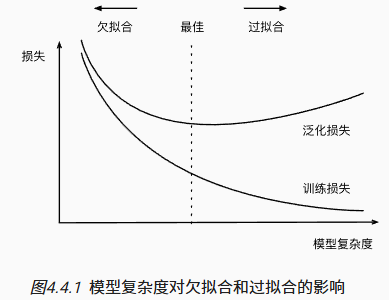
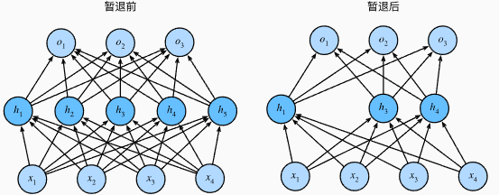

深度学习基础(三)-过欠拟合，梯度消失爆炸，前反向传播...
深度学习基础(三)-过欠拟合，梯度消失爆炸，前反向传播…
小批量随机梯度下降
梯度下降最简单的用法是计算损失函数（数据集中所有样本的损失均值） 关于模型参数的导数（在这里也可以称为梯度）。 但实际中的执行可能会非常慢：因为在每一次更新参数之前，我们必须遍历整个数据集。 因此，我们通常会在每次需要计算更新的时候随机抽取一小批样本， 这种变体叫做小批量随机梯度下降（minibatch stochastic gradient descent）
在每次迭代中，我们首先随机抽样一个小批量， 它是由固定数量的训练样本组成的。 然后，我们计算小批量的平均损失关于模型参数的导数（也可以称为梯度）。 最后，我们将梯度乘以一个预先确定的正数，并从当前参数的值中减掉。
用下面的数学公式来表示这一更新过程（表示偏导数）
算法的步骤如下： （1）初始化模型参数的值，如随机初始化； （2）从数据集中随机抽取小批量样本且在负梯度的方向上更新参数，并不断迭代这一步骤。 对于平方损失和仿射变换，我们可以明确地写成如下形式:
表示每个小批量中的样本数，这也称为批量大小。表示学习率（learning rate）
模型选择，过拟合与欠拟合
过拟合（overfitting）：将模型在训练数据上拟合的比在潜在分布中更接近的现象 。
欠拟合（underfitting）。训练误差和验证误差都很严重， 但它们之间仅有一点差距。 如果模型不能降低训练误差，这可能意味着模型过于简单（即表达能力不足）， 无法捕获试图学习的模式。 此外，由于我们的训练和验证误差之间的泛化误差很小， 我们有理由相信可以用一个更复杂的模型降低训练误差。
是否过拟合或欠拟合可能取决于模型复杂性和可用训练数据集的大小
- 高阶多项式函数比低阶多项式函数复杂得多。 高阶多项式的参数较多，模型函数的选择范围较广。 因此在固定训练数据集的情况下， 高阶多项式函数相对于低阶多项式的训练误差应该始终更低（最坏也是相等）。
- 训练数据集中的样本越少，我们就越有可能（且更严重地）过拟合。 随着训练数据量的增加，泛化误差通常会减小。

正则化（regularization）：用于对抗过拟合的技术。
训练误差（training error）：模型在训练数据集上计算得到的误差。
泛化误差（generalization error）：模型应用在同样从原始样本的分布中抽取的无限多数据样本时，模型误差的期望。
在我们目前已探讨、并将在之后继续探讨的监督学习情景中， 我们假设训练数据和测试数据都是从相同的分布中独立提取的。 这通常被称为独立同分布假设， 这意味着对数据进行采样的过程没有进行“记忆”。 换句话说，抽取的第2个样本和第3个样本的相关性， 并不比抽取的第2个样本和第200万个样本的相关性更强。
要成为一名优秀的机器学习科学家需要具备批判性思考能力。 假设是存在漏洞的，即很容易找出假设失效的情况。 如果我们根据从加州大学旧金山分校医学中心的患者数据训练死亡风险预测模型， 并将其应用于马萨诸塞州综合医院的患者数据，结果会怎么样？ 这两个数据的分布可能不完全一样。 此外，抽样过程可能与时间有关。 比如当我们对微博的主题进行分类时， 新闻周期会使得正在讨论的话题产生时间依赖性，从而违反独立性假设。
有时候我们即使轻微违背独立同分布假设，模型仍将继续运行得非常好。 比如，我们有许多有用的工具已经应用于现实，如人脸识别、语音识别和语言翻译。 毕竟，几乎所有现实的应用都至少涉及到一些违背独立同分布假设的情况。
K折交叉验证：当训练数据稀缺时，我们甚至可能无法提供足够的数据来构成一个合适的验证集。 这个问题的一个流行的解决方案是采用K折交叉验证。 这里，原始训练数据被分成K个不重叠的子集。 然后执行K次模型训练和验证，每次在K−1个子集上进行训练， 并在剩余的一个子集（在该轮中没有用于训练的子集）上进行验证。 最后，通过对K次实验的结果取平均来估计训练和验证误差。
模型复杂性由什么构成是一个复杂的问题。 一个模型是否能很好地泛化取决于很多因素。 例如，具有更多参数的模型可能被认为更复杂， 参数有更大取值范围的模型可能更为复杂。 通常对于神经网络，我们认为需要更多训练迭代的模型比较复杂， 而需要早停（early stopping）的模型（即较少训练迭代周期）就不那么复杂。
几个倾向于影响模型泛化的因素：
- 可调整参数的数量。当可调整参数的数量（有时称为自由度）很大时，模型往往更容易过拟合。
- 参数采用的值。当权重的取值范围较大时，模型可能更容易过拟合。
- 训练样本的数量。即使模型很简单，也很容易过拟合只包含一两个样本的数据集。而过拟合一个有数百万个样本的数据集则需要一个极其灵活的模型。
解决过拟合问题可以从正则化技术和训练数据本身入手，比如增加更多的训练数据和降低模型复杂度。
权重衰减
我们总是可以通过去收集更多的训练数据来缓解过拟合。 但这可能成本很高，耗时颇多，或者完全超出我们的控制，因而在短期内不可能做到。 假设我们已经拥有尽可能多的高质量数据，我们便可以将重点放在正则化技术上。限制特征的数量是缓解过拟合的一种常用技术。 然而，简单地丢弃特征对这项工作来说可能过于生硬。
训练参数化机器学习模型时， 权重衰减（weight decay）是最广泛使用的正则化的技术之一， 它通常也被称为L2正则化。 这项技术通过函数与零的距离来衡量函数的复杂度， 因为在所有函数f中，函数f=0（所有输入都得到值0） 在某种意义上是最简单的。
一种简单的方法是通过线性函数中的权重向量的某个范数来度量其复杂性， 例如。 要保证权重向量比较小， 最常用方法是将其范数作为惩罚项加到最小化损失的问题中。 将原来的训练目标最小化训练标签上的预测损失， 调整为最小化预测损失和惩罚项之和。 现在，如果我们的权重向量增长的太大， 我们的学习算法可能会更集中于最小化权重范数。 为了惩罚权重向量的大小， 必须以某种方式在损失函数中添加，通过个非负超参数正则化常数λ来描述这种权衡:
为什么在这里我们使用平方范数而不是标准范数（即欧几里得距离）？为了便于计算。 通过平方L2范数去掉平方根，留下权重向量每个分量的平方和。 这使得惩罚的导数很容易计算：导数的和等于和的导数。
此外，为什么我们首先使用L2范数，而不是L1范数。 事实上，这个选择在整个统计领域中都是有效的和受欢迎的。 L2正则化线性模型构成经典的岭回归（ridge regression）算法， L1正则化线性回归是统计学中类似的基本模型， 通常被称为套索回归（lasso regression）。 使用L2范数的一个原因是它对权重向量的大分量施加了巨大的惩罚。 这使得我们的学习算法偏向于在大量特征上均匀分布权重的模型。 在实践中，这可能使它们对单个变量中的观测误差更为稳定。 相比之下，L1惩罚会导致模型将权重集中在一小部分特征上， 而将其他权重清除为零。 这称为特征选择（feature selection），这可能是其他场景下需要的.
正则化回归的小批量随机梯度下降更新如下式：
与特征选择相比，权重衰减为我们提供了一种连续的机制来调整函数的复杂度。 较小的λ值对应较少约束的w， 而较大的λ值对w的约束更大。
在实例化优化器时可以直接通过weight_decay指定weight decay超参数。 默认情况下，PyTorch同时衰减权重和偏移。
1 | import torch |
Dropout（暂退法）
我们已经假设了一个先验，即权重的值取自均值为0的高斯分布。 更直观的是，我们希望模型深度挖掘特征，即将其权重分散到许多特征中， 而不是过于依赖少数潜在的虚假关联。
当面对更多的特征而样本不足时，线性模型往往会过拟合。 相反，当给出更多样本而不是特征，通常线性模型不会过拟合。 不幸的是，线性模型泛化的可靠性是有代价的。 简单地说，线性模型没有考虑到特征之间的交互作用。 对于每个特征，线性模型必须指定正的或负的权重，而忽略其他特征。
泛化性和灵活性之间的这种基本权衡被描述为偏差-方差权衡（bias-variance tradeoff）。 线性模型有很高的偏差：它们只能表示一小类函数。 然而，这些模型的方差很低：它们在不同的随机数据样本上可以得出相似的结果。
深度神经网络位于偏差-方差谱的另一端。 与线性模型不同，神经网络并不局限于单独查看每个特征，而是学习特征之间的交互。 即使我们有比特征多得多的样本，深度神经网络也有可能过拟合。
“好”的预测模型能在未知的数据上有很好的表现： 经典泛化理论认为，为了缩小训练和测试性能之间的差距，应该以简单的模型为目标。
简单性以较小维度的形式展现， 参数的范数也代表了一种有用的简单性度量。简单性的另一个角度是平滑性，即函数不应该对其输入的微小变化敏感。 例如，当我们对图像进行分类时，我们预计向像素添加一些随机噪声应该是基本无影响的。
在训练过程中，通过在计算后续层之前向网络的每一层注入噪声。 因为当训练一个有多层的深层网络时，注入噪声只会在输入-输出映射上增强平滑性。这个想法被称为暂退法（dropout），因为我们从表面上看是在训练过程中丢弃（drop out）一些神经元。 在整个训练过程的每一次迭代中，标准暂退法包括在计算下一层之前将当前层中的一些节点置零。
神经网络过拟合与每一层都依赖于前一层激活值相关，称这种情况为“共适应性”。暂退法会破坏共适应性，就像有性生殖会破坏共适应的基因一样。
关键的挑战就是如何注入这种噪声。 一种想法是以一种无偏向（unbiased）的方式注入噪声。 这样在固定住其他层时，每一层的期望值等于没有噪音时的值。
在标准暂退法正则化中，通过按保留（未丢弃）的节点的分数进行规范化来消除每一层的偏差。 换言之，每个中间活性值h以暂退概率p由随机变量h′替换，如下所示：
根据此模型的设计，其期望值保持不变，即E[h′]=h。

当将暂退法应用到隐藏层，以p的概率将隐藏单元置为零时， 结果可以看作一个只包含原始神经元子集的网络。因此输出的计算不再依赖于置零的隐藏单元，并且它们各自的梯度在执行反向传播时也会消失。 这样，输出层的计算不能过度依赖于隐藏层的任何一个元素。通常，我们在测试时不用暂退法。 给定一个训练好的模型和一个新的样本，我们不会丢弃任何节点，因此不需要标准化
Dropout就是在激活函数之后将一些隐藏单元置0，使得输出层的计算不能过度依赖于隐藏层的任何一个元素。这可以看作一种加噪声的方式，来在输入-输出映射上增强平滑性，也继而增强简单性，使得“好”的预测模型能在未知的数据上有很好的表现。
1 | net = nn.Sequential(nn.Flatten(), |
暂退法在前向传播过程中，计算每一内部层的同时丢弃一些神经元。
暂退法可以避免过拟合，它通常与控制权重向量的维数和大小结合使用的。
暂退法仅在训练期间使用。
问题：dropout中为什么要除以 keep_prob?
为了保证使用dropout时的神经元输出激活值的期望值与不使用时一致，结合概率论的知识：假设一个神经元的输出激活值为a 。在不使用drop_path的情况下，其输出期望值为a 。如果使用了drop_path，神经元就可能有保留和关闭两种状态，把它看作一个离散型随机变量，它就符合概率论中的0-1分布，其输出激活值的期望变为p ∗ a + ( 1 − p ) ∗ 0 = p*a ，此时若要保持期望与不使用drop_path时一致，就需要除以p。
Drop path
实际上是一个很小众的方法，使用情况极其冷淡，但是在ViT原文论文中出现了
drop_path就是在一个batch里面随机去除一部分样本
- Dropout：将神经元间的连接随机删除。
- Droppath：将深度学习模型中的多分支结构子路径随机”删除。
以上图为例，若随机到x1，Droppath就是把由x1衍生出的前进路径全部删除掉。
drop_path理解和pytorch代码_droppath-CSDN博客
nn.Dropout、DropPath的理解与pytorch代码_import torch droppath-CSDN博客
DropPath或drop_path正则化（通俗易懂）-CSDN博客
反向传播与前向传播
在训练神经网络时，在初始化模型参数后， 我们交替使用前向传播和反向传播，利用反向传播给出的梯度来更新模型参数。 注意，反向传播重复利用前向传播中存储的中间值，以避免重复计算。 带来的影响之一是我们需要保留中间值，直到反向传播完成。 这也是训练比单纯的预测需要更多的内存（显存）的原因之一。 此外，这些中间值的大小与网络层的数量和批量的大小大致成正比。 因此，使用更大的批量来训练更深层次的网络更容易导致内存不足（out of memory）。
数值稳定性与模型初始化
初始化方案的选择在神经网络学习中起着举足轻重的作用， 它对保持数值稳定性至关重要。 此外，这些初始化方案的选择可以与非线性激活函数的选择有趣的结合在一起。 我们选择哪个函数以及如何初始化参数可以决定优化算法收敛的速度有多快。 糟糕选择可能会导致我们在训练时遇到梯度爆炸或梯度消失。
梯度消失与梯度爆炸
当在求解梯度时，由于链式法则求导的原因会导致很多的梯度相乘，当太多的梯度乘在一起时。容易受到数值下溢问题的影响。个常见的技巧是切换到对数空间， 即将数值表示的压力从尾数转移到指数。 不幸的是，上面的问题更为严重
不稳定梯度带来的风险不止在于数值表示； 不稳定梯度也威胁到我们优化算法的稳定性。 我们可能面临一些如下问题：
- 梯度爆炸（gradient exploding）： 参数更新过大，破坏了模型的稳定收敛；
- 梯度消失（gradient vanishing）： 参数更新过小，在每次更新时几乎不会移动，导致模型无法学习。
梯度消失（gradient vanishing）：
曾经sigmoid函数很流行，然而，它却是导致梯度消失问题的一个常见的原因。当sigmoid函数的输入很大或是很小时，它的梯度都会消失。 此外，当反向传播通过许多层时，除非我们在刚刚好的地方， 这些地方sigmoid函数的输入接近于零，否则整个乘积的梯度可能会消失。 当我们的网络有很多层时，除非我们很小心，否则在某一层可能会切断梯度。因此，更稳定的ReLU系列函数已经成为从业者的默认选择
梯度爆炸（gradient exploding）：顾名思义
对称性：神经网络设计中的另一个问题是其参数化所固有的对称性。 假设我们有一个简单的多层感知机，它有一个隐藏层和两个隐藏单元。 在这种情况下，我们可以对第一层的权重W(1)进行重排列， 并且同样对输出层的权重进行重排列，可以获得相同的函数。 第一个隐藏单元与第二个隐藏单元没有什么特别的区别。 换句话说，我们在每一层的隐藏单元之间具有排列对称性。
假设输出层将上述两个隐藏单元的多层感知机转换为仅一个输出单元。 想象一下，如果我们将隐藏层的所有参数初始化为W(1)=c， c为常量，会发生什么？ 在这种情况下，在前向传播期间，两个隐藏单元采用相同的输入和参数， 产生相同的激活，该激活被送到输出单元。 在反向传播期间，根据参数W(1)对输出单元进行微分， 得到一个梯度，其元素都取相同的值。 因此，在基于梯度的迭代（例如，小批量随机梯度下降）之后， W(1)的所有元素仍然采用相同的值。 这样的迭代永远不会打破对称性，我们可能永远也无法实现网络的表达能力。 隐藏层的行为就好像只有一个单元。 请注意，虽然小批量随机梯度下降不会打破这种对称性，但暂退法正则化可以。
参数初始化
解决（或至少减轻）上述问题的一种方法是进行参数初始化， 优化期间的注意和适当的正则化也可以进一步提高稳定性。
默认初始化
如果不指定初始化方法， 框架将使用默认的随机初始化方法，例如使用正态分布来初始化权重值，对于中等难度的问题，这种方法通常很有效。
- 常数初始化(constant):把权值或者偏置初始化为一个常数，例如设置为0，偏置初始化为0较为常见，权重很少会初始化为0
- 均匀分布初始化(uniform):给定最大最小的上下限，参数会在该范围内以均匀分布方式进行初始化，
Xavier初始化(适用于使用tanh、sigmoid为激活函数的网络)
根据输入和输出单元的方差来初始化权重，其目的是为了使得模型各层的激活值和梯度在传播过程中的方差保持一致。
Xavier 的初始化有两种变体:
1.从均值为零，方差的高斯分布中采样权重
2.从均值为零，方差的均匀分布中抽取权重
表示输入参数的数目,表示输出参数的数目，保证了正向传播时，激活值的方差保持不变；反向传播时，关于状态值的梯度的方差保持不变。
He初始化
Xavier在tanh中表现的很好，但在Relu激活函数中表现的很差，所何凯明提出了针对于Relu的初始化方法。He初始化的出现是因为xavier存在一个不成立的假设。xavier在推导中假设激活函数都是线性的，而在深度学习中常用的ReLu等都是非线性的激活函数。而He初始化本质上是高斯分布初始化，与上述高斯分布初始化有所不同，其是个满足均值为0，方差为2/n的高斯分布。
He Initialization也有两种变体：(适用对象: ReLU激活函数，无BN)
1.从均值为零，方差的高斯分布中采样权重
2.从均值为零，方差的均匀分布中抽取权重
He Initialization的拓展:(适用对象: Leaky ReLU激活函数，无BN)
其它初始化方法：
正交初始化，稀疏初始化，LSUV初始化，Delta-正交初始化，自适应初始化方法
特殊初始化方法
- 权重剪枝：通过设置权重的阈值，去除对模型贡献较小的连接，有助于减少过拟合和提高模型泛化能力。
- 知识蒸馏：使用预训练的较大模型作为教师模型，将其知识传递给较小的小模型。这种方法特别适用于资源有限的场景。
分布偏移
通常情况下，开发人员会拥有一些数据且急于开发模型，而不关注这些基本问题。许多失败的机器学习部署（即实际应用）都可以追究到这种方式。 有时，根据测试集的精度衡量，模型表现得非常出色。 但是当数据分布突然改变时，模型在部署中会出现灾难性的失败。 更隐蔽的是，有时模型的部署本身就是扰乱数据分布的催化剂。
假设训练数据是从某个分布中采样的， 但是测试数据将包含从另一不同分布中抽取的未标记样本。 一个清醒的现实是：如果没有任何关于pS和pT之间相互关系的假设， 学习到一个分类器是不可能的。
考虑一个二元分类问题：区分狗和猫。 如果分布可以以任意方式偏移，那么我们的情景允许病态的情况， 即输入的分布保持不变：pS(x)=pT(x)， 但标签全部翻转：pS(y|x)=1−pT(y|x)。 换言之，如果将来所有的“猫”现在都是狗，而我们以前所说的“狗”现在是猫。 而此时输入p(x)的分布没有任何改变， 那么我们就不可能将这种情景与分布完全没有变化的情景区分开。
协变量偏移
虽然输入的分布可能随时间而改变， 但标签函数（即条件分布P(y∣x)）没有改变。 统计学家称之为协变量偏移（covariate shift）， 因为这个问题是由于协变量（特征）分布的变化而产生的。例如训练集由真实照片组成，而测试集只包含卡通图片，这时由于训练集训练后的模型参数不变即P(y∣x)不变，而输入x的分布改变了，导致输出y的分布也发生了变化，导致预测的不准确。
协变量偏移纠正
标签偏移
概念偏移
GPU
在PyTorch中，CPU和GPU可以用torch.device('cpu') 和torch.device('cuda')表示。 应该注意的是，cpu设备意味着所有物理CPU和内存， 这意味着PyTorch的计算将尝试使用所有CPU核心。 然而，gpu设备只代表一个卡和相应的显存。 如果有多个GPU，我们使用torch.device(f'cuda:{i}') 来表示第i块GPU（i从0开始）。 另外，cuda:0和cuda是等价的。
1 | import torch |
查询可用gpu的数量：
1 | torch.cuda.device_count() |
默认情况下，张量是在CPU上创建的。需要注意的是，无论何时我们要对多个项进行操作， 它们都必须在同一个设备上。 例如，如果对两个张量求和， 我们需要确保两个张量都位于同一个设备上， 否则框架将不知道在哪里存储结果，甚至不知道在哪里执行计算。
可以在创建张量时指定存储设备。在第一个gpu上创建张量变量X。 在GPU上创建的张量只消耗这个GPU的显存
1 | X = torch.ones(2, 3, device='cuda:0') |
类似地，神经网络模型可以指定设备
1 | net = nn.Sequential(nn.Linear(3, 1)) |